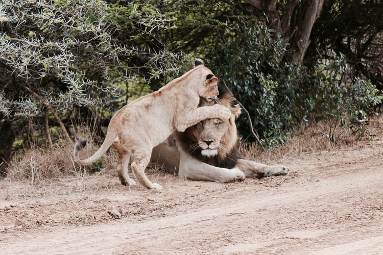

Since resources are limited we focus our effort on a select few species that we
rotate
yearly.
The following
are the species for 2021.
To read more about our selected species just click on one of them (more will be added later as our work expands!
Cat species that we plan to focus on are the following, in order of appearance,